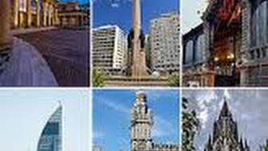
Montevideo
Capital de Uruguay conocida por la Ciudad Vieja colonial y art deco, y playas como Pocitos.
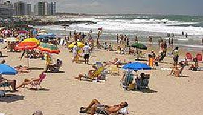
Punta del Este
Ciudad turística uruguaya conocida por la escultura “La Mano”, la playa Mansa y la isla Gorriti.
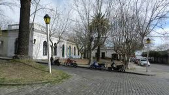
Colonia del Sacramento
Ciudad uruguaya frente al río con su Barrio Histórico bien conservado desde la época colonial.
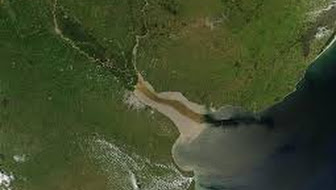
Río de la Plata
Estuario de los ríos Paraná y Uruguay
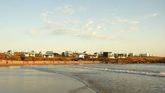
Punta del Diablo
Pueblo turístico uruguayo conocido por sus playas, el parque Santa Teresa y la conservación de
tortugas.
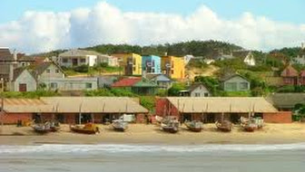
Piriápolis
Población costera de Uruguay con vistas desde el cerro de San Antonio y edificios de estilo
Belle
Époque.
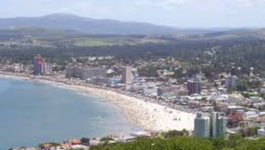
José Ignacio
Complejo turístico playero elegante con áreas para surf, coctelerías y restaurantes modernos,
además
de vistas desde el faro de José Ignacio.
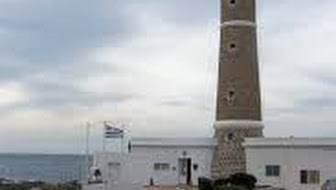
Salto
Ciudad uruguaya conocida por la animada calle Uruguay, el Teatro Larrañaga del siglo XIX y
las
aguas termales.
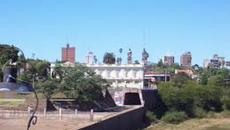
La Paloma
Pueblo costero de Uruguay junto al faro del cabo de Santa María, la bahía Grande y la reserva
Laguna
de Rocha.
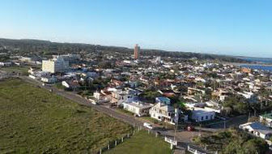
Departamento de Rocha
Departamento del este de Uruguay con playas en la Punta del Diablo y tortugas marinas en La
Coronilla.
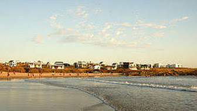
La Pedrera
Playa, surf y deportes acuáticos
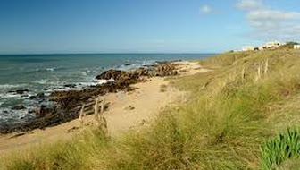
Carmelo
Municipio uruguayo famoso por la Playa Seré, el Río de la Plata y la Rambla de los
Constituyentes.
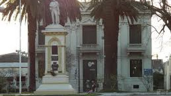
Rocha
Playa y parque
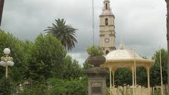
Fray Bentos
Teatro, museo, historia, playa y río
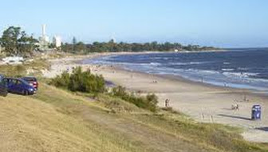
Chuy
Parque acuático, playa, compras y parque
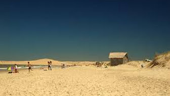
Atlántida
Playa, águila y jardín zoológico
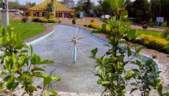
Barra de Valizas
Playa
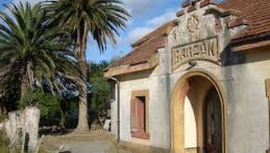
Termas del Arapey
Aguas termales y golf
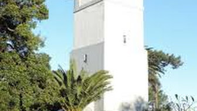
Garzón
Pueblo uruguayo conocido por el restaurante El Garzón, la bodega Garzón y las playas de José
Ignacio.
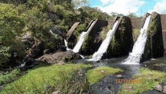
Maldonado
Playa, museo e historia
Minas
Parque y naturaleza
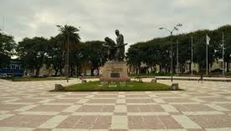
Rivera
Casino, bodega, compras y vino
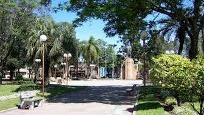
Nueva Helvecia
Historia, monumento y cata de vinos
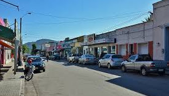
San Gregorio de Polanco
Playa, pintura, arte y museo
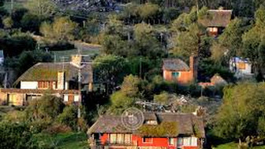
Tacuarembó
Museo, arte y naturaleza
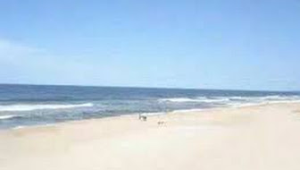
Pan de Azúcar
Turismo ecológico, parque e historia
.jpg)
Villa Serrana
Senderismo
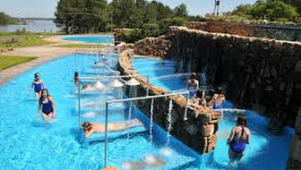
Sauce de Portezuelo
Playa
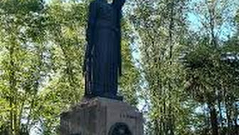
Paysandú
Ciudad uruguaya con el museo histórico, esculturas en el cementerio de Paysandú y baños termales
cercanos.
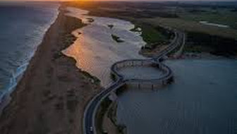
Termas del Dayman
Aguas termales y parque acuático
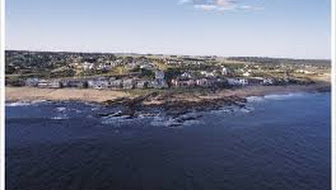
Canelones
Bodega, playa, viña, vino y cata de vinos
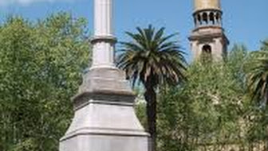
Laguna Garzón
Área protegida, kitesurf y windsurf
Manantiales
Pueblo animado frente al mar, con surf en la playa Bikini, una intensa vida nocturna, y tiendas
y
restaurantes modernos.
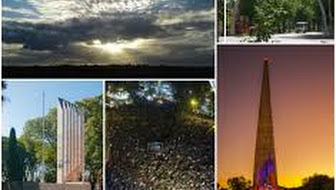
Durazno
Jardín zoológico, monumento e historia
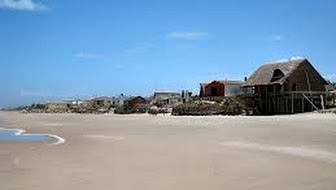
Paysandú
Monumento, basílica y aguas termales
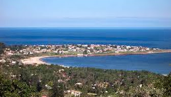
San José
Catedral, museo e historia
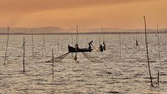
Treinta y Tres
Naturaleza, río e historia
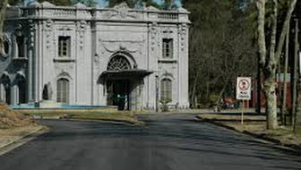
Punta Colorada
Playa y surf
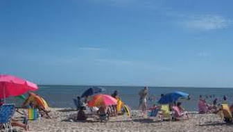
Artigas
Minería, monumento y naturaleza
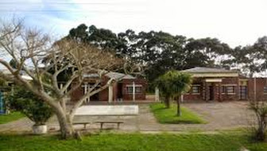
Laguna de Rocha
Área protegida, humedal y naturaleza